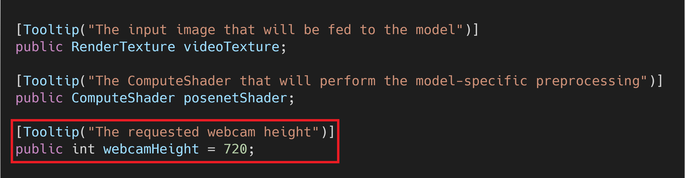
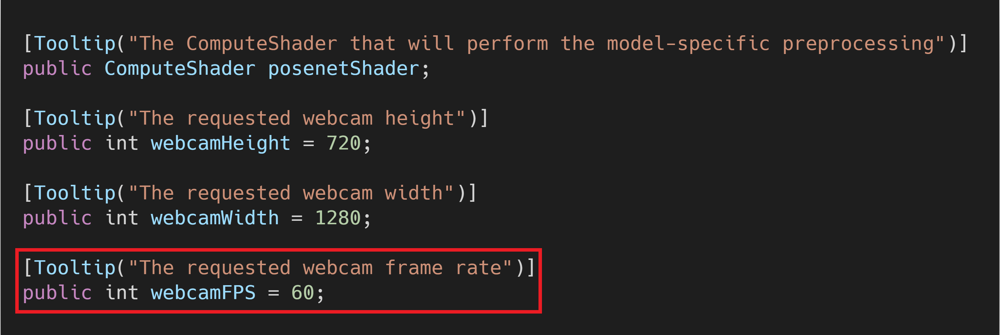
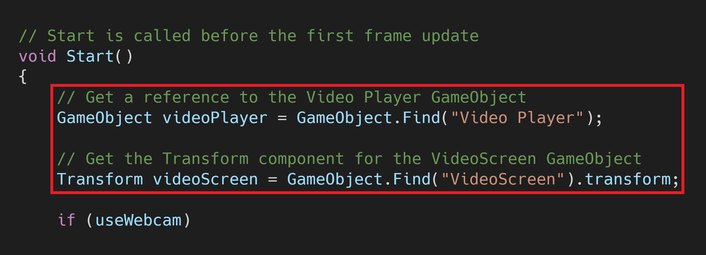
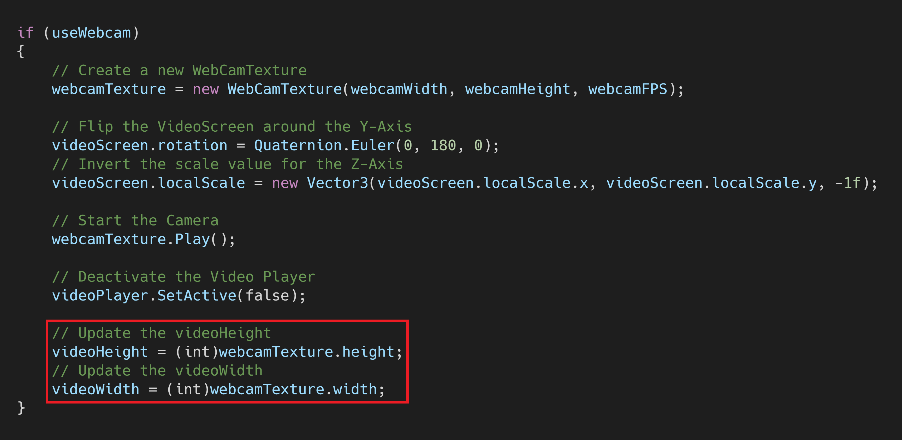
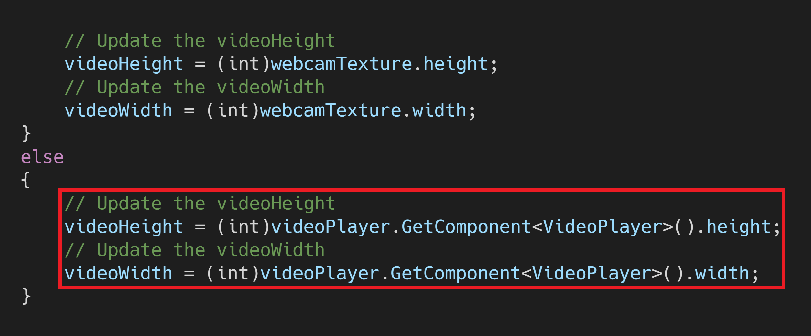
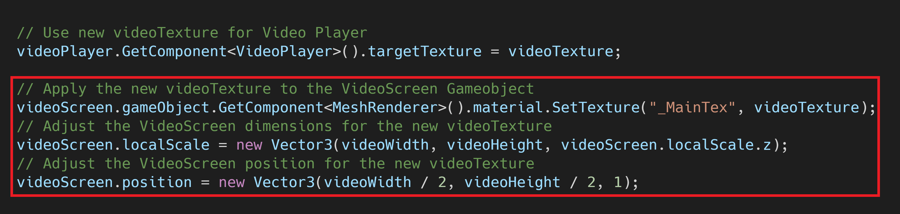
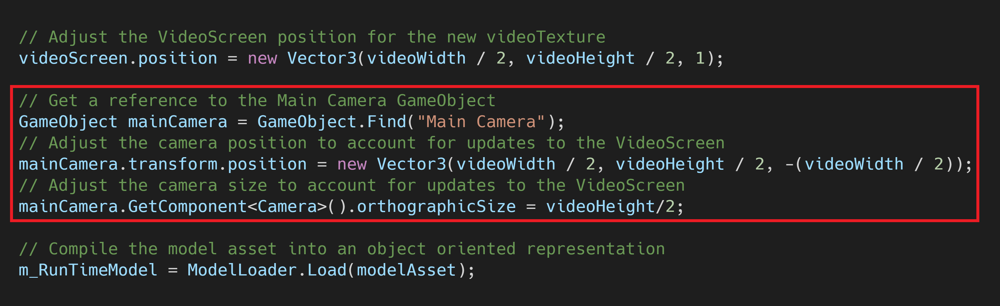
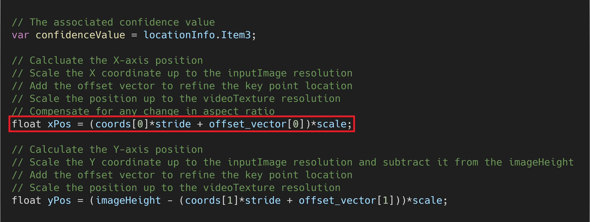

Barracuda PoseNet Tutorial Pt. 8 (Outdated)
Version 2: Part 1
Last Updated: Dec 1, 2020
Previous: Part 7
Introduction
So far, we’ve only worked with video sources that have 16:9 aspect ratios. You might need to work with input that has a taller or wider aspect ratio depending on your application and equipment. In this post, we’ll cover how to adjust to the current source resolution at runtime.
Add UnityEngine.Video Namespace
Open the PoseNet script and add a new using directive at the top. We need the UnityEngine.Video namespace to work with the Video Player object.

Add Webcam Variables
Unity defaults to a resolution of 640 x 480 for webcams. There is no built-in method that returns the frame rate. However, the default does not appear to be over 30fps. We can request a resolution and frame rate when initializing the webcamTexture. Unity should accept the requested settings as long as the camera supports them. Unity defaults to its closest preset if the requested settings are not supported.
Create webcamHeight Variable
Add a new public int variable so we can adjust the camera height from the Inspector tab. Name the variable webcamHeight. My webcam supports 720p at 60fps, so I’ve set the default value to 720.

Create webcamWidth Variable
Next, create a variable for the camera’s width and name it webcamWidth. I’ve set the default value to 1280.

Create webcamFPS Variable
We’ll also add a variable to set the frame rate for the camera and name it webcamFPS. Set the default value to 60.

Add Video Resolution Variables
Next, we need to create a couple of private int variables to store the dimensions of the video source. Name the variables videoHeight and videoWidth.

Update Start() Method
We’ll make some modifications to the Start() method to prepare for input with different aspect ratios.
Get Reference to Video Player
Create a new GameObject variable to access the Video Player object. Name the variable videoPlayer and place it at the top of the Start() method. We’ll also move the Transform videoScreen variable outside of the if (useWebcam) statement.

Get Webcam Resolution
We can’t access the webcam resolution until after the webcam has started. Therefore, we’ll update the values for videoHeight and videoWidth after webcamTexture.Play() has been called.

Get Video Clip Dimensions
We need to get the video resolution from the Video Player object when we’re not using a webcam. We can get the height and width by accessing the VideoPlayer component.

Replace videoTexture
The dimensions for videoTexture can’t be updated once it’s been created. We’ll need to replace it with a new RenderTexture that uses the new videoHeight and videoWidth values. We also need to set the new videoTexture as the targetTexture for the Video Player object.

Update VideoScreen
Next, we need to apply the new videoTexture to the VideoScreen object. We’ll also resize and reposition the VideoScreen to account for any changes in the videoTexture dimensions.

Adjust Main Camera
We’ll also resize and reposition the Main Camera object to account for changes to the VideoScreen.

Update ProcessOutput() Method
Finally, we need to modify how we calculate the key point locations.
Update Scaling Calculations
We’ll account for different aspect ratios by first determining whether the height or width of videoTexture is larger. We then use that information to calculate the scale and unsqueezeScale values.

Update Key Point Calculations
We should only scale the xPos value by the unsqueezeScale if the width larger than the height. Remove that part from the initial xPos calculation. We also need to move the if (useWebcam) statement.

We’ll scale either xPos or yPos by unsqueezeScale depending on whether the width or height value for videoTexture is larger. Place the if (useWebcam) statement after this calculation.

Try It Out
Now we can test the modifications on some vertical videos from Pexels.
Summary
Now we can use video sources with different aspect ratios without needing to manually change any parameters.